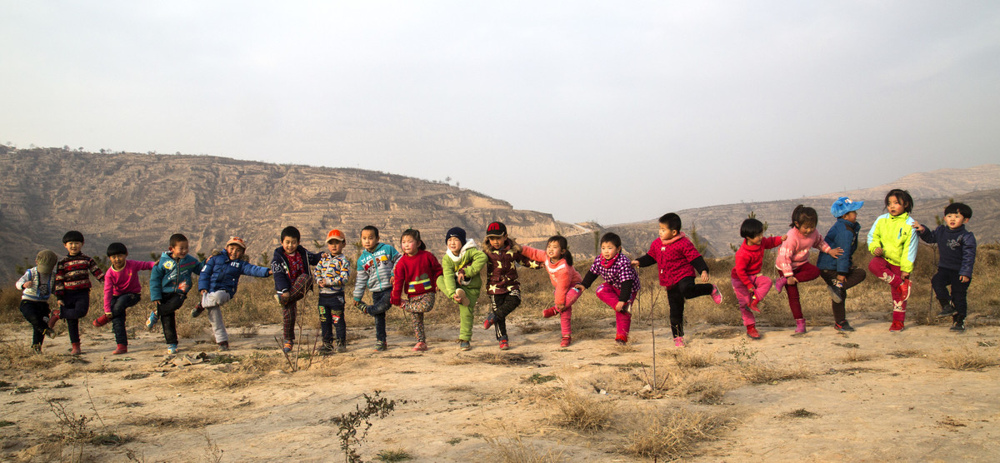
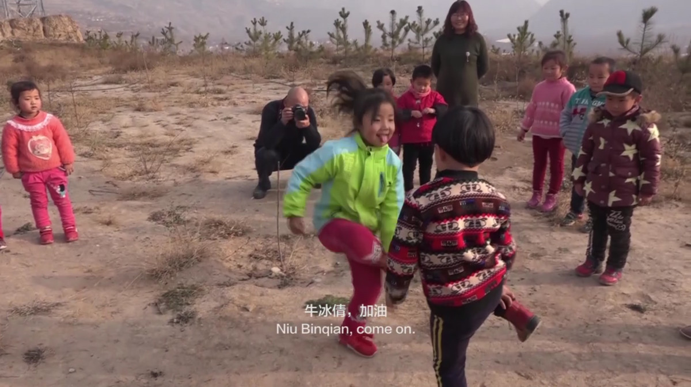
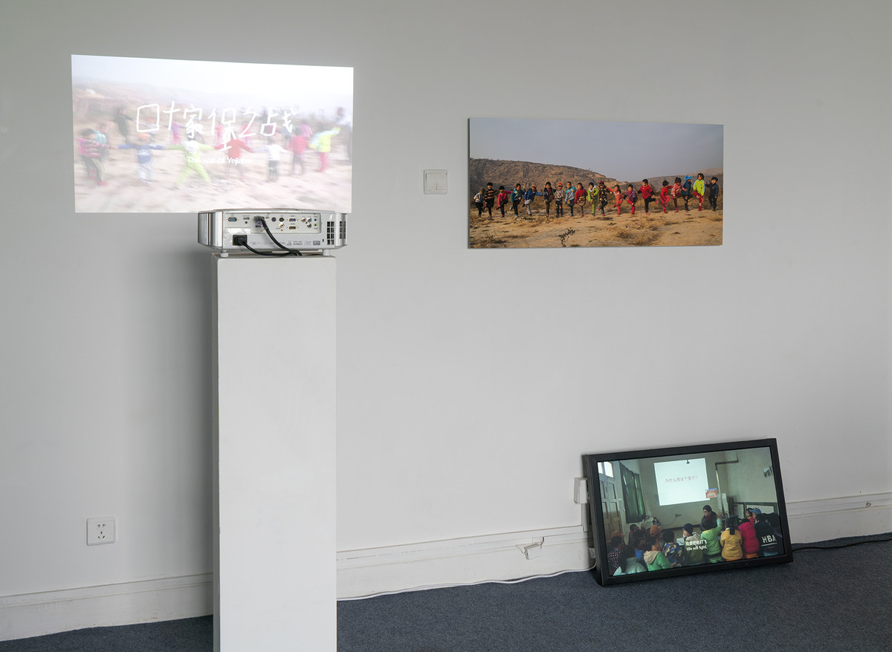
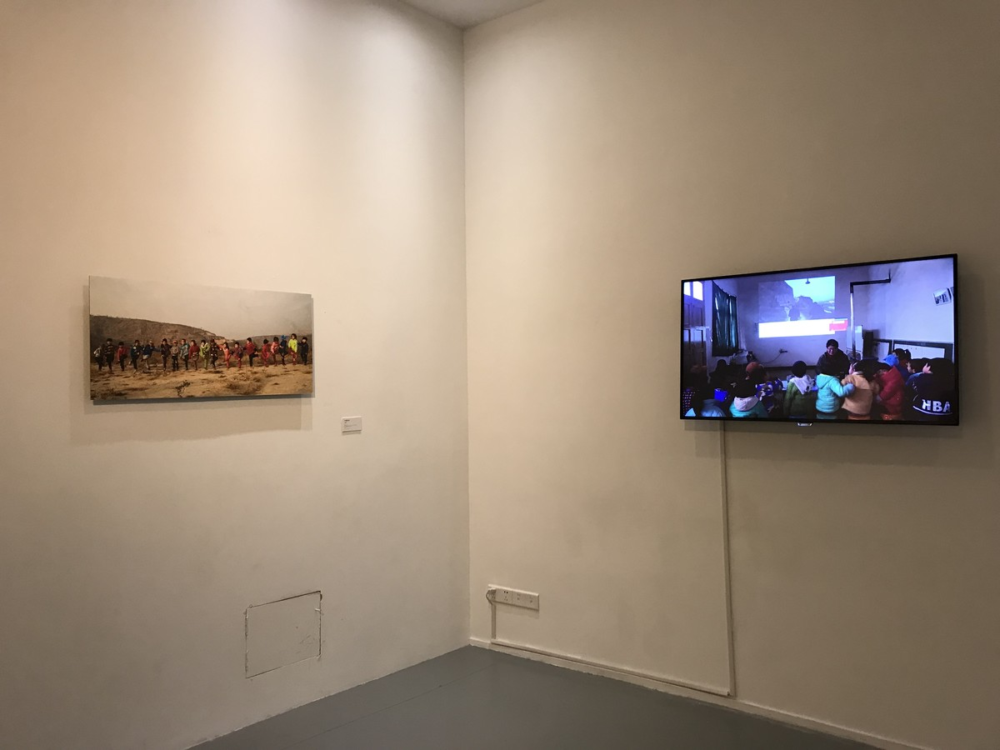

叶家堡之战 | THE WAR OF YEJIABU

图片，数字微喷到纯棉纸基，尺寸为100x46cm ；录像，5分54秒，单屏幕彩色，有声，可变尺寸 ，2016
Photographs, Archival inkjet print, 100x46cm; HD Video,5`54``, Single-channel\Color\Sound\Variable, 2016
2016年的冬天，在中国西北地区的甘肃省天水地区，我带领了19个小朋友在他们学校旁一个古代战争遗址（叶家堡）上玩了一场“打仗”游戏。
“堡子”是中国西北甘陕地区村民自卫用的城堡，多建于清末同治回乱时期。
In the winter of 2016, I led 19 children to plan a “fight” game at an ancient relic of war (Yejiabu) next to their school, in Tianshui area, Gansu Province, northwest China.
“Bu” refers to fortress used by villagers in Gansu and Shaanxi Provinces in northwest China for defending themselves. Most of the “Bus” were built during the Hui (Muslim) Minorities War under the ruling of Tongzhi Emperor of late Qing Dynasty. 20 million people from both sides died from the war between the Han people and the Muslims.

甘肃天水叶家堡，天水
Yejiabu town, Tianshui city, Gansu province

PPPP空间，北京
PPPP Space, Beijing

金鸡湖美术馆，苏州
Jinji Lake Art Museum, Suzhou